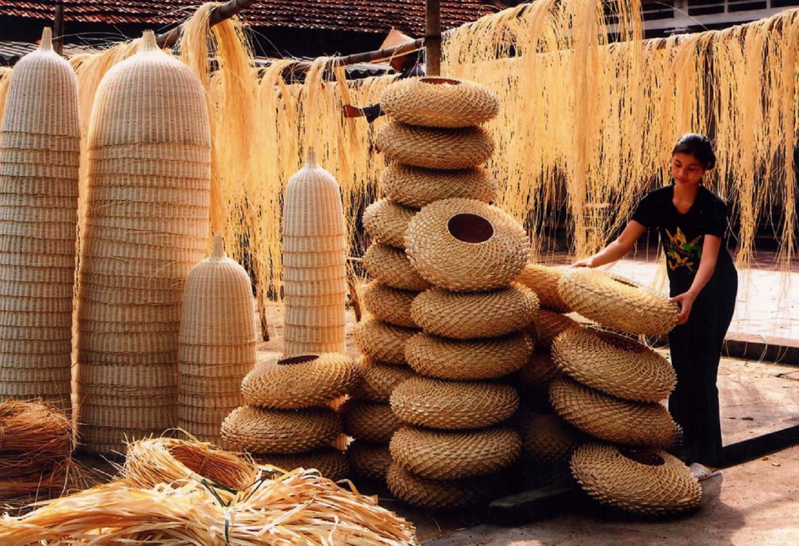

Mặc dù mang về 1,7 tỷ USD kim ngạch xuất khẩu mỗi năm, nhưng các sản phẩm thủ công mỹ nghệ tại các làng nghề còn chậm cải tiến, đổi mới, đột phá về mẫu mã để theo kịp với sự phát triển đa dạng của kinh tế thị trường... Hiện có tới 90% sản phẩm thủ công mỹ nghệ của Việt Nam dựa trên thiết kế của khách hàng nước ngoài. Hiện có tới 90% sản phẩm thủ công mỹ nghệ của Việt Nam dựa trên thiết kế của khách hàng nước ngoài. Ngày 28/7/2023, tại Vĩnh Phúc, Hiệp hội Làng nghề Việt Nam phối hợp với Cục Công thương địa phương (Bộ Công Thương) tổ chức Hội thảo “Nâng cao năng lực thiết kế mẫu mã sản phẩm thủ công mỹ nghệ tăng sức cạnh tranh thị trường trong nước và xuất khẩu”.
